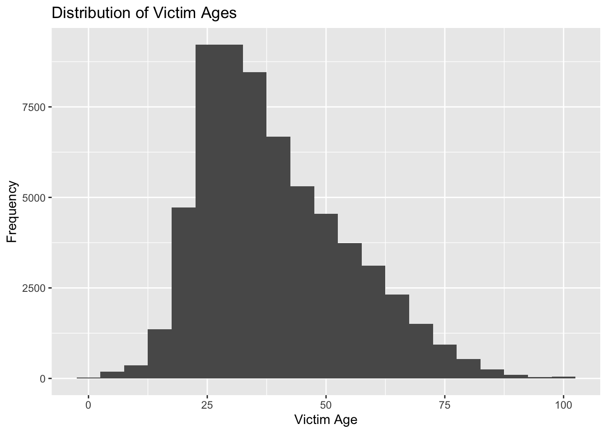

This Quarto document will summarize LAPD crime data from 01/01/2024 - 09/16/2024 by creating tables and visualizations. I’ll focus on the post-NIBRS transition period, analyzing trends in crime types, locations, and time periods.
Introduction:
This analysis explores crime data from the Los Angeles Police Department (LAPD) spanning from 01/01/2024 - 09/16/2024. I retrieved this data from data.gov. After conducting preliminary data cleaning and manipulation in Excel, including editing column titles and removing extraneous information, the dataset is now suitable for analysis in R.
The cleaned dataset provides insights into crime incidents within the city. While the data is generally accurate, it’s important to acknowledge potential inaccuracies due to the transcription process from paper crime reports.
To protect privacy, location fields are rounded to the nearest hundred block. Missing location data is indicated as (0°, 0°). This study aims to analyze crime trends, identify patterns, and assess the impact of potential data limitations.
Methods:
Methods: Victim Age Analysis
Data Management
Handling Non-numeric Values: The VICT_AGE column was initially converted to numeric using as.numeric(). Any values that could not be converted were replaced with NA using replace(). This ensured data consistency for subsequent calculations.
Removing Negative Values: Negative values in the VICT_AGE column were removed using filter(), as negative ages are not typically valid in this context.
Data Analysis
Summary Statistics: Key summary statistics were calculated for the cleaned VICT_AGE data, including mean, median, mode, standard deviation, minimum, and maximum values.
Mode Calculation: A custom function was used to calculate the mode, handling cases where there might be no valid values after filtering for complete cases.
Table Creation: The summary statistics were presented in a formatted table using knitr::kable() and kableExtra::kable_styling() for enhanced readability and visual appeal.
Histogram Visualization: A histogram was created to visually represent the distribution of victim ages, providing insights into the age demographics involved in the reported crimes.
These steps ensured that the data was prepared for analysis and that the resulting summary statistics and visualization were accurate and informative.
# Create a histogram to visualize victim age distributionggplot(crime, aes(x = VICT_AGE)) +geom_histogram(binwidth =5) +labs(title ="Distribution of Victim Ages", x ="Victim Age", y ="Frequency")

Methods: Crime Date and Time Analysis
I couldn’t complete the analysis for date this but I wanted to keep this text here to see if this is something we could talk about. I had trouble trying to work with the time data, I’m not sure if it was because of the “0:00” at the end but I would like to learn more about fixing issues like this.
All I could do for time was insert a colon into the military time but every time I try making it a time object I have errors.
# Convert military time to hours and minutescrime <- crime %>%mutate(TIME_OCC =paste0(substr(TIME_OCC, 1, 2), ":", substr(TIME_OCC, 3, 4)) )
Methods: Analyzing Victim Sex Distribution
Data Cleaning and Preparation
Replaced Invalid Values: The VICT_SEX column was cleaned by replacing NA, “H”, and “-” values with an empty string. This ensured data consistency and prevented these values from skewing the analysis.
Visualization and Summary
Bar Chart: A bar chart was created to visually represent the distribution of victim sex categories. The x-axis displayed the victim sex categories (M, F, X), and the y-axis represented the count of occurrences.
Summary Table: A table was generated to summarize the numerical distribution of victim sex categories. The table included the victim sex category and its corresponding count.
By combining these methods, the analysis provides a comprehensive understanding of the victim sex distribution in the dataset, excluding the specified invalid categories.
# Replace NA, "H", and "-" with blankscrime <- crime %>%mutate(VICT_SEX =case_when(is.na(VICT_SEX) | VICT_SEX =="H"| VICT_SEX =="-"~"",TRUE~ VICT_SEX ) )# Create a bar chart of victim sexggplot(crime, aes(x = VICT_SEX)) +geom_bar(fill ="orange") +labs(title ="Distribution of Victim Sex",x ="Victim Sex",y ="Count")
# Create a table of victim sex distributionvictim_sex_table <- crime %>%count(VICT_SEX) %>%arrange(desc(n))
Methods: Analyzing Victim Descent
1. Data Cleaning:
Replaced Missing Values: The VICT_DESCENT column was cleaned by replacing NA values with blanks using ifelse(). This ensures data consistency and avoids skewing the analysis.
2. Visualization:
Bar Chart: A bar chart was created using ggplot2 to visually represent the distribution of victim descent categories. The x-axis displayed the unique victim descent categories, and the y-axis represented the count of occurrences.
3. Summary Table:
Count Table: A table was generated using dplyr to summarize the numerical distribution of victim descent categories. The table included the victim descent category and its corresponding count, ordered by descending count.
Additional Note:
The code also adjusts the x-axis labels in the bar chart by rotating them at a 45-degree angle and aligning them to the right for better readability with theme().
This set of methods provides a clear understanding of victim descent distribution in the dataset, excluding missing values and potentially misleading characters.
# Replace NA values with blankscrime <- crime %>%mutate(VICT_DESCENT =ifelse(is.na(VICT_DESCENT), "", VICT_DESCENT) )# Create a bar chart of victim descentggplot(crime, aes(x = VICT_DESCENT)) +geom_bar(fill ="skyblue") +labs(title ="Distribution of Victim Descent",x ="Victim Descent",y ="Count") +theme(axis.text.x =element_text(angle =45, hjust =1)) # Adjust angle and alignment
# Create a table of victim descent distributionvictim_descent_table <- crime %>%count(VICT_DESCENT) %>%arrange(desc(n))
Methods: Analyzing Crime Counts by Area
1. Visualization:
Bar Chart: A bar chart was created using ggplot2 to visually represent the distribution of crimes across different areas. The x-axis displayed the area names, and the y-axis represented the count of crimes.
2. Data Summarization:
Frequency Table: A table was generated using dplyr to summarize the number of crimes in each area. The table included the area name and its corresponding crime count, ordered by descending count.
Additional Notes:
The code ensures that the x-axis labels in the bar chart are rotated vertically for better readability when there are many unique area names.
# Create a bar chart of crime counts by area nameggplot(crime, aes(x = AREA_NAME)) +geom_bar(fill ="skyblue") +labs(title ="Distribution of Crimes by Area",x ="Area Name",y ="Count") +theme(axis.text.x =element_text(angle =90, hjust =1))
# Create a table of crime counts by area namearea_counts <- crime %>%count(AREA_NAME) %>%arrange(desc(n))